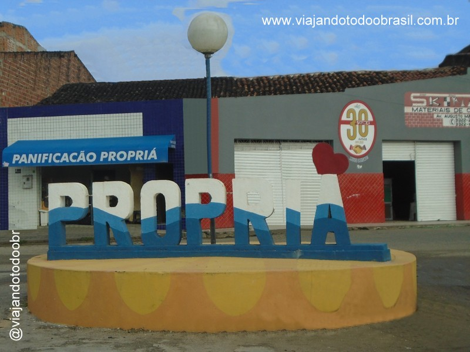

Propriá
História
Propriá teve origem no princípio do século XVII, quando foi instalada uma missão jesuíta para catequese dos índios. O município, que comandava administrativamente várias cidades da região do rio São Francisco, era conhecido na época como “Urubu de Baixo” e pertencia a Cristóvão de Barros, conquistador de Sergipe, que doou em 9 de abril de 1500 ao filho dele Antônio Cardoso de Barros.
No final da primeira metade do século XVII, as terras foram doadas pela viúva de Antônio Cardoso de Barros, D. Guiomar de Melo, ao genro Pedro Abreu de Lima. Diante da privilegiada localização às margens do rio São Francisco, que proporcionava um rápido progresso, Urubu de Baixo foi elevada em 18 de outubro de 1718 a Sede de Freguesia de Santo Antônio de Urubu de Baixo, desmembrada da Vila-Nova do São Francisco.
Em 5 de setembro de 1801, foi elevada a Freguesia à Vila. A instalação da Vila de Propriá foi realizada com uma solenidade festiva em 7 de fevereiro de 1802, naquele dia foi construído um pelourinho de pau redondo em frente à Igreja de Santo Antônio como sinal de autonomia. Em finais de 1859, o imperador Dom Pedro II e a imperatriz Tereza Cristina chegam a Propriá através do Rio São Francisco. Foi ele quem idealizou a ponte, mas a queria em outra localização, passando por dentro da cidade. Parece que ele estava certo. Veja o que anotou dom Pedro em sua agenda: "Propriá é uma vila de 3 mil habitantes, com algumas casas boas e de sobrado, e uma fábrica ... de descascar arroz, com máquina de vapor...". Arroz, peixe, algodão, cana-de-açúcar e uma enorme feira regional. Propriá era um centro industrial e comercial tão forte que só perdia para Aracaju. Por conta disso, todos os outros setores da sociedade cresciam. O padre Antônio Cabral, vigário da cidade, recebendo três freiras de Portugal, resolveu construir um colégio para meninas. Boa parte dos recursos para a construção da escola foi doada por João Fernandes de Britto. Nasce o Colégio Nossa Senhora das Graças, que começou a receber meninas das famílias tradicionais de Sergipe. Através da Resolução Provincial nº 755 de 21 de fevereiro de 1866, Propriá recebe a categoria de cidade. Propriá já foi a segunda economia do Estado de Sergipe (a primeira era Aracaju) e liderava o comércio atacadista do Baixo São Francisco (Sergipe e Alagoas). Localiza-se a uma latitude 10º12'40" sul e a uma longitude 36º50'25" oeste, estando a uma altitude de 14 metros.
O município é limitado pelo estado de Alagoas ao nordeste e pelos municípios de Neópolis e Japoatã ao sul, São Francisco ao sudoeste, e Cedro de São João e Telha ao oeste. A economia de Propriá sofre de uma decadência que vem da década de 1970. Nessa época, Propriá era a 2ª cidade mais rica de Sergipe. Mas por causa de más administrações e a decadência da atividade industrial e da importância do Rio São Francisco para a economia, Propriá é apenas hoje a 22ª cidade mais rica de Sergipe. Propriá tem tradição na fabricação de doces típicos. Destaque para o doce de batata, considerado o melhor do Estado de Sergipe.
fonte: https://propria.se.gov.br/bandeira-e-hinoPontos Turísticos
Catedral de Santo Antônio
O clero e todo o povo de Deus, em Propriá-SE (leste sergipano), possuem a Igreja-Mãe de todas as comunidades paroquiais do território da diocese. O templo, um dos mais antigos de Sergipe, se tornou catedral diocesana a partir da criação da diocese, em 30 de abril de 1960. Um novenário em preparação para a celebração jubilar acontece desde o dia 11 deste mês, com o tema 300 anos construindo o reino de Deus entre nós! “Deus habita esta cidade” (Sl 49,10).
A paróquia Santo Antônio está sob os cuidados pastorais do padre Clebson Ferreira Moura (pároco) e dos padres Francisco Luiz de Barros e Murilo de Moraes Silva (vigários paroquiais).
Dados Gerais de acordo com o IBGE
| Prefeito (a) | Valberto Lima |
| Vice-Prefeito (a) | Rafael Sandes |
| Site do município | https://propria.se.gov.br/ |
| Área territorial | 96,320 km² |
| População estimada | 96,320 pessoas |
| Densidade demográfica | 319,24 hab/km² |
| IDHM | 0,661 |
| PIB per capita | R$ 17.349,14 |